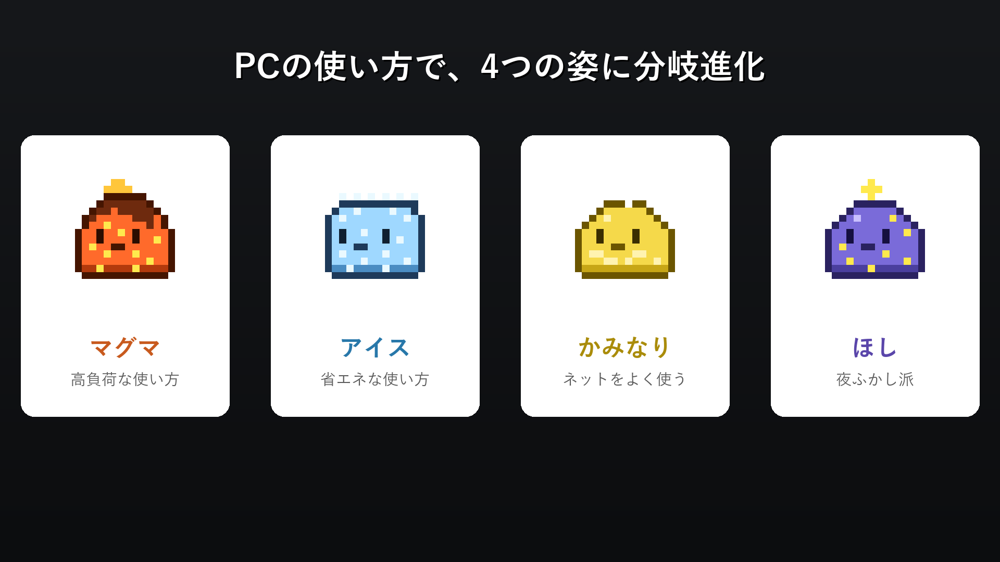
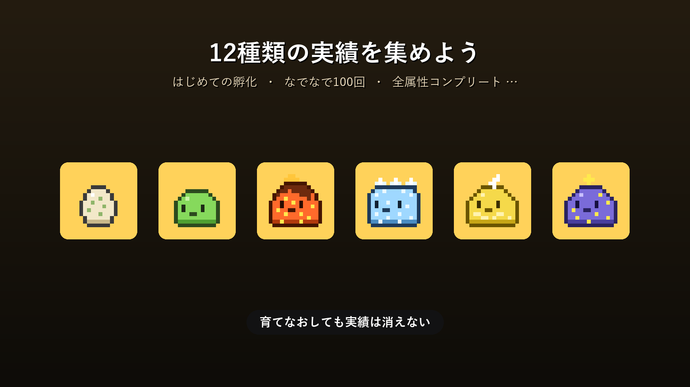

タスクバーに、ちいさな相棒を。
TrayLifeは、Windowsの通知領域(システムトレイ)に住み着くピクセルアートのバーチャルペットです。 むずかしい操作は何もありません。いつもどおりPCを使うだけで、スライムは勝手に育っていきます。 ゲームで遊んだ日も、資料づくりに追われた日も、夜ふかしした日も — その全部が、この子の個性になります。
TrayLife is a pixel-art virtual pet living in your Windows system tray. Just use your PC as usual — it grows on its own, shaped by your habits.
できること
CPU負荷でアニメが変わる
重い処理中はぷよぷよ跳ねまくり、暇なときはのんびり。PCの「今」が動きに出ます。
タスクバーをおさんぽ
タスクバーの上端を歩いてマウスカーソルを追いかけます。ジャンプしたり、座って休憩したり。
なでる・つまむ
クリックでなでるとハートを出して喜びます。ドラッグでつまんで運ぶとジタバタ。
12種類の実績
「はじめての孵化」から「全属性コンプリート」まで。育てなおしても実績は残ります。
システムモニター
CPU / RAM / GPU / 温度 / ネットワーク速度をトレイからいつでも確認。メモリ逼迫やディスク残量僅少も知らせてくれます。
気のきく作り
ライト/ダークテーマ自動追従、日英UI対応、休憩リマインダー。軽量・低負荷で作業の邪魔をしません。
あなたの使い方が、進化を決める
スライムはPCの使用時間で経験値を貯め、たまご → 子スライム → 成体へ。最終進化はあなたの使い方しだいです。

| すがた | 進化条件 |
|---|---|
| 🔥 マグマスライム | 高負荷な使い方(ゲーム・動画編集など) |
| ❄️ アイススライム | 省エネな使い方 |
| ⚡ かみなりスライム | ネットワークをよく使う |
| 🌙 ほしスライム | 深夜(0〜5時)の稼働が多い夜ふかし派 |
育てて、集めて、かわいがる

トレイメニューを開けば、いまの状態がひと目でわかります。 XP、なつき度のハート、成体までの進化ゲージ、そしてCPU/RAM/GPU/ネットワークの実況。 ペット手帳とシステムモニターがひとつになったような画面です。
なでた回数はなつき度として記録され、進化のたびに光のバースト演出がスライムを包みます。

プライバシーについて
TrayLifeは個人情報を一切収集せず、インターネット通信も行いません。 読み取るのはお使いのPC内の使用状況(CPU/メモリ/GPU/ネットワーク速度)だけで、その情報がPCの外に出ることはありません。
プライバシーポリシー全文を読む →